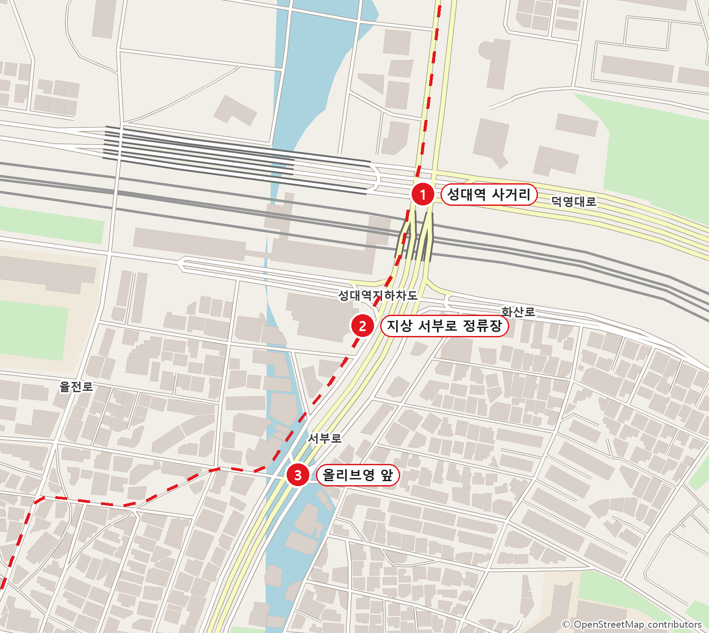

Autonomous Driving
in SKKU
성균관대역에서 교내 주차장까지, SUMO에서 학습한 자율주행차의 2.8 km
박준수 · 임수진 · 임재성 · 최민기
성균관대역에서 교내 주차장까지
서부로에서 출발해 성균관대역 사거리와 율전동 골목을 지나 교내 주차장까지 가는 약 2.8 km를 SUMO에 구현했다. 이 짧은 경로에서 자율주행차는 버스 뒤에서 속도를 줄이고, 신호가 없는 교차로에서 양보하고, 정문 앞 신호를 기다려 좌회전해야 한다.
팀은 같은 경로에 서로 다른 배경 교통을 생성해 정책을 학습하고, 처음 보는 교통 시드에서 충돌·완주·신호 위반을 측정했다. 최종 정책의 주행 기록은 다른 사람이 상태와 행동을 분석할 수 있도록 공개했다.
도로와 배경 교통



약 2.8 km의 주행 경로
- 서부로 남행 차로에서 출발해 0.36 km 지점의 성균관대역 사거리를 지난다.
- 서부로 버스 정류장을 지나 골목 오거리로 들어간다. 율전로에서 무신호 좌회전을 한 뒤 회전교차로를 통과한다.
- 율전로64번길과 일월로를 거쳐 학교 정문에서 좌회전한다.
- 교내 무신호 교차로를 지나 2.80 km 지점의 교내 주차장에 도착한다.
일반 차량이 만드는 교통
경로에는 신호 교차로 5곳, 무신호 교차로 3곳, 회전교차로 1곳, 버스 정류장 2곳이 있다. 승용차는 시간당 약 1,440대를 기준으로 생성하고, 실제 노선을 따른 버스는 정류장에서 20초간 정차한다.
17개 버스 노선과 주차장 출입 차량을 포함해 배경 교통을 600초간 먼저 채운 뒤 AV를 투입했다.
시간대에 따라 승용차 교통량에 0.95–1.3배의 배율을 적용했다. 회전교차로에는 시간당 250–450대, 오거리에는 150–180대, 정문 앞에는 250대의 흐름을 설정했다. 발표 자료 8장
교차로에서 언제 기다리고 언제 진입하는가
충돌 사례에서는 골목에서 내려오는 차가 지나가기 전에 좌회전했다. 정상 사례에서는 진입로 맨 앞에 멈춰 우선 차량을 보낸 뒤 좌회전한다. 영상 열기 (22초)
충돌 사례에서는 대기 중인 앞차에 2.5 m 이내로 접근했다. 정상 사례에서는 진입선 앞에서 기다리다가 회전 차량이 지나간 뒤 들어간다. 영상 열기 (45초)
NW7은 신호와 앞차를 어떻게 구분하나
관측
정책은 0.5초마다 45개 수치를 입력받는다. 기본 관측 31개에 신호, 교차로, 제한 속도, 앞차와 정지선 근접 정보 14개를 추가했다.
행동
정책은 −1에서 1 사이의 값 두 개를 출력한다. 하나는 연속 가감속에, 다른 하나는 오른쪽·유지·왼쪽 중 차로 행동을 고르는 데 쓴다. 차로 변경은 수업 환경의 안전 확인을 통과할 때 실행된다.
보상
완주는 +2점, 충돌은 −5점, 양보 위반은 −2점이다. NW7에서는 적색 진입 벌점을 −5점에서 −30점으로 바꾸고, 적색 정지선에서 멀리 멈췄을 때의 감점을 0으로 설정했다.
PPO 학습 조건
교통 시드 0–499와 출발 지점 12곳을 사용했다. 은닉층은 256 × 256이며, 2,048스텝을 모을 때마다 크기 128의 미니배치로 5회 반복해 갱신했다. 학습률은 0.0001에서 0.000025까지 선형으로 줄였다.
11월 19일 모델에서 NW7까지
11월 19일에는 위험 교차로와 일월로 앞을 출발 지점에 포함하고 교통량을 1.4배로 높인 조건도 섞어 학습했다. 이후에는 적색 대기 중 누적되는 감점을 줄이고, 교차로 안에서도 다음 교차로의 우선 차량을 고려해 양보하도록 바꿨다. 실험 과정 · 12–14장
최종 NW7은 js_h13e_30k에서 가상 정지 차량 관측을 끄고 10만 스텝 더 학습한 모델이다. 더 오래 학습하면 주행이 느려지고 정지선에서 멀리 멈춰, 정지선까지 거리 중앙값이 2.7 m인 10만 스텝 모델을 선택했다. 모델 선정 근거 · 15장
새로운 교통 시드 1,000개에서의 주행
시드 2000–2999에서 최종 NW7 모델로 전체 경로를 한 번씩 주행했다. 충돌률과 완주율은 주행 횟수를 기준으로 계산했고, 적색 신호 진입은 발생 횟수를 셌다.
11월 19일 모델과 최종 NW7 비교
두 모델 모두 같은 교통 시드 2000–2999에서 1,000회씩 주행했다. NW7에서는 적색 진입이 21회에서 0회로 줄었고, 평균 완주 시간은 495초에서 513초로 늘었다. 두 모델의 충돌률 95% 신뢰구간은 겹친다.
| 평가 항목 | 11/19 · traf30k | 최종 · NW7 |
|---|---|---|
| 평가 에피소드 수 | 1,000회 | 1,000회 |
| 완주율 | 96.9% | 97.5% |
| 충돌률 | 3.1% | 2.5% |
| 적색 신호 진입 | 21회 | 0회 |
| 평균 주행속도 | 20.4 km/h | 19.6 km/h |
| 평균 완주 시간 | 495초 | 513초 |
| 정지선까지 거리 (중앙값) | — | 2.7 m |
| 정지한 앞차 뒤 간격 (중앙값) | — | 6.9 m |
| 시간초과 (1,200초) | 0회 | 0회 |
11/19 모델은 jaeseong_1119_traf30k다. 표의 ‘—’는 정차 거리 측정 방식이 달라 직접 비교를 생략한 항목이다. 발표 자료 16장
공개 주행 데이터셋
한 행은 자율주행차가 주변을 관측하고 행동을 한 번 선택한 뒤 보상과 다음 상태를 얻기까지의 한 스텝이다. 학습·평가와 겹치지 않는 교통 시드 4000–13874에서 NW7 정책의 결정적 행동으로 수집했다. 한 스텝은 0.5초다.
5회 주행을 한 묶음으로 저장해 총 1,975개 묶음을 만들었다. 첫 묶음은 시드 4000–4004의 5,154스텝이다. 상세 기록은 transitions.jsonl.gz, 배열 분석용 데이터는 transitions.npz에 들어 있다. 첫 묶음의 파일 보기 ↗
| JSONL 필드 | 한 스텝에서 읽을 수 있는 내용 |
|---|---|
episode, t | 주행 번호와 해당 주행 안에서의 스텝 번호 |
observation, state | 정책에 입력한 45개 관측값과 시뮬레이터의 상세 상태. 상세 상태에는 자차의 위치·속도·가속도·차로·제한 속도, 주변 100 m의 차량, 신호 6곳의 현시·연결별 색·남은 시간, 교통 시드가 있다. |
action_raw, action | 정책의 가감속·차선 변경 출력과 차선 변경 적용 여부 |
reward, terminated, truncated | 해당 스텝의 보상과 주행 종료·시간 제한 여부 |
detected_vehicles, event | 감지한 주변 차량과 충돌·도착 여부, 행동 전후 차로 |
next_observation, next_state | 중간 스텝에서는 같은 주행의 다음 행에서 읽고, 마지막 스텝에서는 해당 행의 필드에서 읽는다. |
남은 과제는 무신호 좌회전에서의 양보
NW7은 새 교통 시드 1,000회에서 충돌률 5% 미만이라는 목표를 달성했다. 남은 충돌 25건 중 15건은 같은 무신호 좌회전 지점에서 발생했다. 오른쪽에서 우선권을 가진 차량이 접근할 때 진입을 보류하는 판단이 다음 개선 과제다. 교통량을 늘린 조건에서 추가 학습하는 것도 남은 과제다.
이 결과는 팀이 설정한 신호 주기와 교통량을 사용한 SUMO 경로에서 측정했다. 시간대별 실측 교통량이나 다른 도로망에서 같은 성능을 내는지는 별도의 평가가 필요하다.
팀원과 작업 기록
| 팀원 | 담당 역할과 작업 기록 |
|---|---|
| 박준수 | 성균관대역 일대 SUMO 도로망 구축 · 학습 환경 연결 · 주행 데이터 수집 및 공개 |
| 임수진 | 정문 신호와 정지선 반복 평가 · 적색 진입 및 정지 위치 평가 도구 제작 |
| 임재성 | NW7 관측·보상 설계와 최종 모델 평가 · 주행 영상 제작 |
| 최민기 | Local B 모델 추가 학습과 정차 평가 · 프로젝트 웹페이지 제작 |